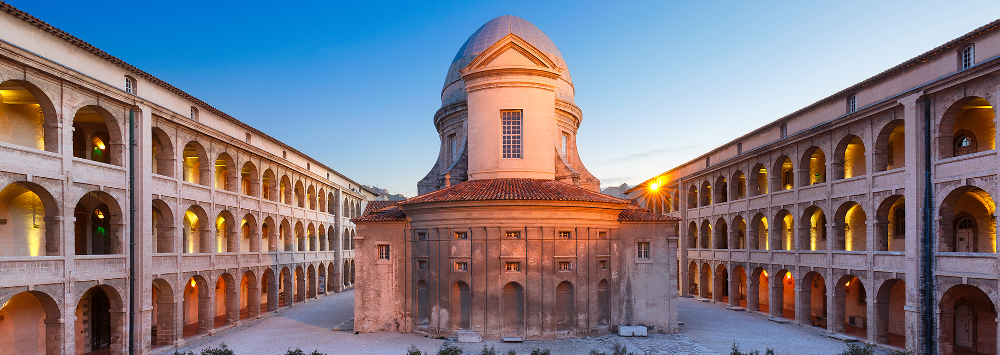
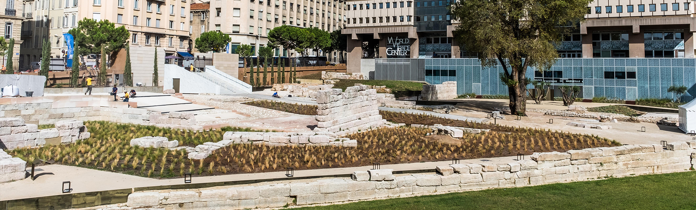

Musée de la Vieille Charité
Horaires :
Du mardi au dimanche de 9h à 18h
Fermeture hebdomadaire le lundi, sauf les lundis de Pâques et de Pentecôte
Fermeture les jours suivants : 1er janvier, 1er mai, 1er et 11 novembre et le 25 décembre.
Fermeture de la billetterie 30 minutes avant la fermeture du musée.
► Afin d'être certain de pouvoir bénéficier de la visite complète de toutes nos salles
d'exposition, nous vous invitons à contacter le musée avant votre visite. Tel : 04 91 14 58 46.
Adresse
2, rue de la Charité
13002 Marseille
Contact
Tél. : 04 91 14 58 46
Tarifs
►L'accès au Musée d'Archéologie Méditerranéenne, (MAM), au Musée d'Arts Africains, Océaniens,
Amérindiens, (MAAOA), est gratuit
►Pour favoriser l’accès à la culture pour toutes et tous, la Ville de Marseille rend gratuit
l’accès à cette exposition le premier jour de son ouverture ainsi que chaque premier dimanche du
mois.
Le Centre de la Vieille Charité abrite de nombreuses structures culturelles : le Musée d'Archéologie Méditerranéenne (MAM), le Musée d'Arts Africains, Océaniens, et Amérindiens (MAAOA), une salle de cinéma d'arts et essais (Le Miroir), le centre international de poésie Marseille (cipM), l'École des Hautes Études en Sciences Sociales (EHESS) et le Centre National de Recherche Scientifique (CNRS).
Les expositions

Baya, une héroine de l'art moderne
Les Musées de la Ville de Marseille et l’Institut du monde arabe s’associent pour présenter l’exposition événement "Baya. Une héroïne algérienne de l'art moderne". Ce projet monographique de grande ampleur est dédié à l’œuvre de l’artiste algérienne Fatma Haddad (Bordj el Kiffan, 1931 - Blida, 1998) internationalement connue aujourd’hui sous le pseudonyme de Baya. Après sa présentation à l’Institut du monde arabe à Paris, cette exposition connaît une seconde étape, augmentée de plusieurs œuvres et documents, au Centre de la Vieille Charité de Marseille du 13 mai au 24 septembre 2023. Constituée de plus d’une centaine d’œuvres, l’exposition revient sur l’ensemble de la trajectoire artistique de Baya et permet aux publics de découvrir l’ensemble des facettes de la production de cette figure singulière de l’art du XXe siècle en Méditerranée - entre peinture, dessin et céramique – ainsi que l’extraordinaire qualité de ses recherches. Un ensemble particulièrement riche d’archives inédites est associé au parcours de visite et notamment le fonds privé Baya – lettres, documents de la main de l’artiste, articles de presse - déposé aux archives nationales d’Outre-Mer à Aix-en-Provence et que l’historienne Anissa Bouayed, commissaire de l’exposition, a consulté en 2017. Porteuse d’une vision de la culture en tant que source d’émancipation de l’individu et outil d’ouverture au monde et à sa diversité, l’exposition s’accompagne de nombreux programmes de médiation spécifiques, proposés aux publics les plus larges et notamment scolaires. Renseignements et réservations : 04 91 14 58 23 - musees@marseille.fr
Présentation de la vieille charité
Aujourd'hui le Centre de la Vieille Charité abrite plusieurs structures multi-culturelles : le Musée d'Archéologie Méditerranéenne, le Musée des Arts Africains, Océaniens, Amérindiens (MAAOA), des expositions temporaires et une salle de cinéma, Le Miroir. L’ensemble est géré par la Direction des musées de Marseille. D'autres organismes culturels se sont établis à la Vieille Charité comme le centre International de la poésie de Marseille (cipM.), le Centre National de la Recherche Scientifique (CNRS) ou encore l'Ecole des Hautes Etudes en Sciences Sociales (l'EHESS).
Le Mucem

Horaires
Le Mucem est ouvert tous les jours sauf le mardi.
Fermeture exceptionnelle les 1er mai et 25 décembre
Du lundi 6 novembre 2023 au mercredi 1er mai 2024
10h—18h
Du jeudi 2 mai au vendredi 5 juillet 2024
10h—19h
Fermeture des billetteries 45 minutes avant la fermeture du site.
Fermeture des salles d'exposition 15 minutes avant la fermeture du site.
Fermeture de la passerelle J4—Fort Saint-Jean 30 minutes avant la fermeture du site.
Tarifs
Un seul billet pour accéder à toutes les expositions permanentes et temporaires
Entrée libre dans les espaces extérieurs (J4 et fort Saint-Jean)
Tarif plein
11€
Tarif réduit
7,50€
Billet famille
18€
(valable pour 5 enfants maximum accompagnés de 2 adultes)
Les adultes non accompagnés d'enfants mineurs ne pourront pas accéder aux salles avec un billet
famille.
Les billets sont valables le jour même pour une entrée dans tous les espaces d’expositions du J4
et du Fort St-Jean.
Accès aux visiteurs en situation de handicap ou à mobilité réduite
Les trois entrées du Mucem sont accessibles aux personnes en fauteuil roulant. Cependant, à l’entrée Panier, après avoir passé la passerelle Saint Laurent, l’accès au fort nécessite un accompagnement humain sur un dizaine de mètres. Vous pouvez solliciter l’aide de l’agent d’accueil à l’entrée du site. Les accueils et billetteries du musée sont accessibles aux personnes en fauteuil roulant et équipés de boucles à induction magnétique. L’accès est prioritaire et sans attente aux accueils et aux contrôles d’accès. Mobi Métropole met à disposition des personnes handicapées un service de transport de porte à porte sur l’ensemble du territoire de Marseille Provence Métropole.
Les expositions


Une autre histoire du monde
En route pour une « autre » histoire du monde. Une histoire où l’Europe et l’Occident ne seraient plus au centre du monde, laissant place à d’autres récits. Le Mucem propose de parcourir l’Histoire du monde du XIIIe au XXIe siècle en abandonnant la perspective occidentale. À travers sculptures, peintures, textiles, cartes, objets archéologiques, manuscrits et arts décoratifs, cette exposition révèle l’infinie diversité des expériences africaines, asiatiques, américaines et océaniennes. Elle donne à voir d’autres mondialisations, dont l’Europe n’est pas le seul moteur. Les œuvres présentées permettent d’appréhender le rapport au temps et à l’espace des sociétés en dehors de l’Europe tout en mettant en lumière leur manière d’écrire l’histoire. Peau de bison lakota, bambou gravé kanak, sarong historié javanais, récit de griot sénégalais témoignent de l’infinie richesse des historiographies vernaculaires. Les voyages et les explorations des marchands, pèlerins et savants arabes, asiatiques ou africains qui « découvrent » des contrées lointaines et produisent de nouveaux savoirs vont venir bouleverser ces conceptions du monde dites traditionnelles. Les cauris africains comme les cartes de navigation chinoises nous rappellent avec force que la mondialisation fut multipolaire, en Asie centrale, dans l’océan Indien et bien au-delà. Avec le décloisonnement progressif du globe, les Européens eux-mêmes deviennent les sujets de nombreuses et parfois déroutantes représentations, et le monde un objet de multiples curiosités et d’ambitions encyclopédistes hors d’Occident. Face au récit européocentré produit par les empires coloniaux à partir du XVIIe siècle, les souverains, les élites et les artistes des autres continents ont cherché à se réapproprier leur histoire, parfois en s’inspirant des pratiques occidentales, pour mettre en scène leur pouvoir ou la résistance anticoloniale. De nouveaux romans nationaux leur permettent aujourd’hui de réécrire leur passé en réinventant leur rapport au monde. L’exposition présente plus de 150 œuvres et objets issus de collections publiques et privées : Bibliothèque municipale de Lyon, Bibliothèque nationale et universitaire de Strasbourg, Bibliothèque nationale de France (Paris), Bibliothèque universitaire des langues et des civilisations (BULAC, Paris), Collège de France (Paris), École française d’Extrême-Orient (Paris), Fondation Cartier pour l’art contemporain (Paris), Galerie Cécile Fakhoury (Paris), Musée agathois Jules Baudou (Agde), Musée Champollion – Les Écritures du monde (Figeac), Musée de la Compagnie des Indes (Lorient), Musée de l’Institut du monde arabe (Paris), Musée des Confluences (Lyon), Musée des explorations du monde (Cannes), Musée du Louvre - Départements des Peintures et des Objets d’art (Paris), Musée du quai Branly - Jacques Chirac (Paris), Musée itinérant de la Perle ancienne en France, Collection Márcia de Castro et Guy Maurette (Paris), Musée national de la voiture – château de Compiègne, Musée national des arts asiatiques – Guimet (Paris), Muséum d’histoire naturelle (Le Havre), Fries Museum (Leeuwarden).
Fashion Folklore
Qu’y a-t-il de commun entre une coiffe tyrolienne et un chapeau Chanel ? Entre une blouse traditionnelle roumaine et un ensemble d’Yves Saint Laurent ? Ou encore entre une veste de Jean Paul Gaultier et un plastron breton ? En allant retrouver des correspondances et inspirations oubliées, l’exposition « Fashion folklore » nous rappelle que tout au long du XXe siècle, les créateurs de haute couture n’ont eu de cesse de convoquer les formes et les imaginaires attachés au costume populaire, et plus largement au folklore. Les collections textiles du Mucem constituent le cœur de l’exposition. Mises en regard avec des pièces de haute couture et de grands créateurs, elles témoignent des continuités qui irriguent l’histoire de la mode comme de la porosité des frontières entre création artistique et culture populaire. Au nouveau regard que la création contemporaine permet de poser sur les costumes répond la profondeur historique que ceux-ci offrent aux œuvres des couturiers, dans un dialogue fructueux entre patrimoine et contemporain. « Fashion Folklore » présente près de 300 pièces issues des fonds du Mucem et de collections françaises et étrangères : Palais Galliera, musée des Arts décoratifs de Paris ; Musée de Quimper ; Musée Yves Saint Laurent – Paris ; Musée de la Mode de Marseille ; Musée municipal de Bucarest. Les plus grands couturiers et maisons de haute couture sont présents : Balenciaga, Gabrielle Chanel, Chloé, Dior, John Galliano, Jean Paul Gaultier, Philippe Guilet, Hermès, Simon Porte Jacquemus, Pascal Jaouen, Kenzo Takada, Christian Lacroix, Karl Lagerfeld, Jeanne Lanvin, Givenchy par Alexander McQueen, Martin Margiela, Val Piriou, Paul Poiret, Yves Saint Laurent, Paco Rabanne, Elsa Schiaparelli, Franck Sorbier, Givenchy par Riccardo Tisci, Valentino, Giambattista Valli, Dries Van Noten, Victor and Rolf, Clare Waigth Keller, Victor Weisanto, Bernard Wilhelm.

Musée des Beaux-arts

Horaires
Du mardi au dimanche de 9h à 18h
Fermeture hebdomadaire le lundi, sauf les lundis de Pâques et de Pentecôte.
Fermeture les jours suivants : 1er janvier, 1er mai, 1er et 11 novembre et le 25 décembre.
Fermeture de la billetterie 30 minutes avant la fermeture du musée.
► En cas d’épisodes de vents violents, le parc Longchamp peut être amené à fermer, empêchant
l’accès au musée. Nous vous invitons à contacter l’accueil du musée par téléphone avant de
vous déplacer afin de vérifier son ouverture effective.
► Afin d'être certain de pouvoir bénéficier de la visite complète de toutes nos salles
d'exposition, nous vous invitons à contacter le Musée avant votre visite.
Accès
Adresse Musée des Beaux-Arts Palais Longchamp Aile gauche 13004 Marseille
Contact : 04 91 14 59 30
Réservation : 04 91 14 59 35
Mail : musee-beauxarts@marseille.fr
Adresse postale : Musée des Beaux-Arts Palais Longchamp 13233 Marseille Cedex 20
Tarifs
Collections permanentes
Gratuites
Expositions temporaires :
Accès gratuit aux collections permanentes.
Catégorie 3
6 euros / 3 euros tarif réduit
Catégorie 2
9 euros / 5 euros tarif réduit
Catégorie 1
12 euros / 8 euros tarif réduit
Le tarif expositions temporaires inclut la visite de la collection permanente.
Gratuit pour les moins de 18 ans et les étudiants de 18 à 26 ans de l'U.E.
Les expositions

Exposition permanente
Les œuvres de Lavinia Fontana, Guerchin, Lanfranco, Pannini et Tiepolo, illustrent l’évolution de la peinture en Italie de la fin de la renaissance au XVIIIe siècle. Les écoles du Nord sont représentées par des tableaux de Jordaens, Stomer, et la Chasse au sanglier, chef-d’œuvre de Rubens. Les tableaux de Champaigne, Vouet, Lesueur témoignent du renouveau de la peinture française pendant le règne de Louis XIII et ceux de Nattier, Vernet, Greuze, Hubert Robert ou David, du triomphe de l’école française au siècle des Lumières. Une des caractéristiques de la collection du musée des Beaux-Arts est de témoigner du dynamisme des arts en Provence du XVIIe et XVIIIe siècles. Les œuvres du peintre Louis Finson, ami de Caravage, de Jean Daret, Nicolas Mignard ou Michel Serre rappellent combien la Provence a su, durant deux siècles, attirer et retenir les artistes de l'Europe du Nord et du Sud. Un exceptionnel ensemble de peintures, sculptures et dessins du plus grand artiste baroque français, Pierre Puget, né à Marseille en 1620 et mort dans cette même ville en 1694, après avoir mené une brillante carrière entre la France et l’Italie, est la parfaite illustration de cet heureux mélange des influences artistiques en Provence. L’École française du XIXe siècle est également l'un des temps forts de la collection permanente. Aux côtés des plus grands maîtres, Courbet, Corot, Daubigny, Millet et Puvis de Chavannes, figurent les représentants de l'école de Marseille comme Loubon, Guigou, ou Ziem qui vont imposer leur vision originale des paysages lumineux du Midi. La Voix intérieure, chef-d’œuvre de Rodin, donné par le sculpteur au musée, les bustes des célébrités du Juste Milieu ou le Ratapoil de Daumier, sont les œuvres les plus célèbres de la galerie de sculpture du XIXe siècle.
Muséum d'histoire naturelle

Horaires
ouvert de 9h à 18h (sauf les lundis)
Ouvertures exceptionnelles :
Lundi de Pâques
Jeudi de l'Ascension
Lundi de Pentecôte
►Afin d'être certain de pouvoir bénéficier de la visite complète de toutes nos salles
d'exposition, nous vous invitons à contacter le Musée avant votre visite.
Fermetures exceptionnelles:
Le 1er janvier
Le 1er mai
Les 1er et 11 novembre
Le 25 décembre
Fermeture de la billetterie 30 minutes avant la fermeture du muséum.
En cas d’épisodes de vents violents, le parc Longchamp peut être amené à fermer, empêchant
l’accès au muséum. Nous vous invitons à contacter l’accueil du musée par téléphone avant de
vous déplacer afin de vérifier son ouverture effective.
Ce vendredi 03 novembre 2023, le Muséum sera exceptionnellement fermé entre 13h et 14h.
Adresse
Palais Longchamp (Aile droite)
Boulevard Philippon
13004 Marseille
Adresse postale : Muséum d'histoire naturelle - Palais Longchamp - 13233 Marseille cedex 20
Les poussettes ne sont pas admises dans les salles d’exposition du Muséum d'histoire
naturelle, de même que les landaus et les portes bébés dorsaux à armature métallique. Ces
dernières peuvent être laissées à l’accueil le temps de la visite.
Contact
Accueil :
04 91 14 59 50
Réservations :
04 91 14 59 55
Mail :
museum@marseille.fr
Tarifs
- Collections permanentes : gratuites
- Spectacles et contes : Tarifs : adulte, 3 €, enfant de plus de 5 ans, 4 € (réduit 1,5 €)
- Exposition temporaire catégorie 3 : 6/3 euros
- Exposition temporaire catégorie 2 : 9/5 euros
- Exposition-événement catégorie 1 :12/8 euros
Entrée gratuite tous les premiers dimanches du mois
Entrée gratuite pour les moins de 18 ans
Gratuit pour les scolaires et centres de loisirs
Les expositions

"Terre d’évolution", le nouveau parcours du Muséum d’Histoire Naturelle
Depuis le 18 septembre, le Muséum d’histoire naturelle présente une nouvelle scénographie pour ses collections permanentes. Le Muséum d’histoire naturelle de Marseille a fêté en 2019 ses 200 ans et les 150 ans de son installation au Palais Longchamp, inauguré en 1869. Ce double anniversaire a été l’occasion de repenser les espaces d’expositions permanentes du Muséum pour offrir aux visiteurs une vision résolument contemporaine du patrimoine naturel et scientifique. Les expositions permanentes du Muséum situées au niveau 1 dataient de 1986 pour la Salle Safari, avec quelques remaniements dans les années 2000. « Les présentations n’étaient plus d’actualité et n’intégraient pas une vision globale de la biodiversité. Les parties préhistoire et évolution ont été également reprises dans le nouveau parcours en intégrant l’ensemble des êtres vivants. « Par ailleurs, une part des objets archéologiques rejoignent un nouvel espace du Musée d’histoire » indique son conservateur et directeur Anne MEDARD. Le nouveau parcours innovant « Terre d’évolution », qui a ouvert ses portes au public le vendredi 18 septembre, à la veille des journées européennes du patrimoine, propose sur les trois salles de découvrir l’histoire du vivant, toutes espèces animales et végétales et toutes périodes géologiques et actuelle confondues «En une seule exposition, le public part à la découverte de la biodiversité autour de sept thématiques : « Vivre là », « Se reproduire », « Se protéger », « Communiquer, percevoir », « Respirer ou pas », « Se nourrir » et « Évoluer ». « Les collections emblématiques du Muséum sont toujours présentes, mais elles sont complétées par des acquisitions de ces 15 dernières années non encore présentées » poursuit Anne MEDARD. Plus de 1 800 espèces sont exposées sur les 60 000 spécimens conservés dans les réserves du Muséum. « Ce sera plus de 1 000 découvertes nouvelles pour les visiteurs du Muséum ! »

Collection permanente du Muséum d'histoire naturelle de Marseille
Le Muséum d’histoire naturelle de Marseille fête cette année ses 200 ans et les 150 ans de son installation au Palais Longchamp, inauguré en 1869. Ce double anniversaire est l’occasion de repenser les espaces d’exposition permanentes du Muséum à l’aune du 21e siècle pour offrir aux visiteurs une vision résolument contemporaine du patrimoine naturel et scientifique. Cette refonte de la muséographie des salles du premier niveau du Muséum combinée à des travaux renforcés d’entretien de l’intérieur du bâtiment nécessitent une fermeture temporaire du Muséum. Cependant, un programme d’activités (exposition, parcours thématiques, sorties nature) hors les murs sur le site Longchamp est proposé aux visiteurs jusqu'à la réouverture des espaces d’exposition. Le Muséum est un lieu où se tissent les liens entre les publics, les sciences et les technologies, où se développent les occasions de rencontres et d’échanges. En ce début de 21ème siècle, résolument tourné vers les problématiques de culture scientifique, notamment celles liées au développement durable, le Muséum propose, au travers d’expositions de référence et temporaires régulièrement renouvelées, une vision écocitoyenne de la biodiversité et des sciences de l’environnement. Les collections du Muséum d'histoire naturelle reflètent de la vie politique, économique et scientifique de Marseille depuis le début du XIXème siècle. Il s'installe en 1869 au Palais Longchamp, édifié à la gloire de l’Eau, des Sciences et des Arts par l’architecte Espérandieu. L'architecture exceptionnelle du Palais abrite des éléments remarquables, classés Monuments Historiques depuis 1997 : la Salle de Provence, ses vitrines, mais également l'escalier d'honneur et les peintures à la cire d’Auburtin et de Ponson. Après 10 mois de travaux, un gigantesque chantier des collections et une mise à jour des contenus scientifiques, le Muséum dévoilera courant printemps 2020 le nouveau parcours permanent. A l'occasion de son bicentenaire, une scénographie repensée tout en conservant l'esprit historique du lieu, les visiteurs pourront découvrir ou redécouvrir les collections enrichies de nombreuses espèces sorties des réserves. Des pièces exceptionnelles, comme un authentique crâne de mammouth laineux, une ammonite nacrée de Madagascar et des boas constrictor accouplés en montage ostéologique côtoient des pièces historiques, comme la girafe et son girafon de 1872 et le mosasaure de plus de 7 mètres de long.
Musée d'histoire de Marseille
Horaires :
Du mardi au dimanche de 9h à 18h
Fermeture hebdomadaire le lundi, sauf les lundis de Pâques et de Pentecôte.
Fermeture les jours suivants : 1er janvier, 1er mai, 1er et 11 novembre et le 25 décembre.
Fermeture de la billetterie 30 minutes avant la fermeture du musée.
►Afin d'être certain de pouvoir bénéficier de la visite complète de toutes nos salles
d'exposition, nous vous invitons à contacter le Musée avant votre visite.
►Le Musée d'Histoire de Marseille dispose d'un centre de documentation.
Uniquement sur rendez-vous par mail : documentation-mhm@marseille.fr et au 04 91 55 36 20
Adresse
2 rue Henri Barbusse - 13001 Marseille
Contact
- Téléphone : 04 91 55 36 00
- Mail : musee-histoire@marseille.fr
Tarifs
Collections permanentes : gratuites
Entrée gratuite tous les premiers dimanches du mois
Entrée gratuite pour les moins de 18 ans
Gratuit pour les scolaires et centres de loisirs
Les expositions

Collection permanente du Musée d'Histoire de Marseille
En 2013, le Musée d’Histoire de Marseille rouvre ses portes dans un tout nouveau parcours
muséographique, didactique et numérique, allant de la Préhistoire à nos jours. Cet ensemble
patrimonial, musée et site, offre au public des clés de lecture pour comprendre la ville
d’aujourd’hui et son évolution.
UN MUSÉE D’HISTOIRE, UN MUSÉE DE VILLE
Musée moderne et accessible à tous, il propose une offre culturelle innovante et
pédagogique.
Les dispositifs multimédia présents dans le musée, sur le site archéologique de la Bourse et
à travers la ville – le long de l’ancienne voie grecque jusqu’au fort Saint-Jean –
permettent aux visiteurs de partir à la rencontre de Marseille et de ses habitants d’hier et
d’aujourd’hui. Les effets de la réalité augmentée, les reconstitutions en 3D, les ambiances
sonores permettent d’embarquer dans une grande machine à voyager dans le temps.
2 600 ANS D’HISTOIRE EN 13 SÉQUENCES
Le parcours muséographique s'appuie sur deux idées fortes : Marseille est la plus ancienne
ville de France et c’est une ville portuaire ouverte sur la mer Méditerranée. Partant de ces
deux évidences, le visiteur découvre l’histoire de la ville grâce à un fil d’Ariane maritime
reliant treize séquences chronologiques, des premières occupations préhistoriques aux
développements urbains contemporains.

Là où il y a eu oppression, il y a eu résistance - 1983-2023 - La marche pour l'égalité et contre le racisme
Partis du quartier de la Cayolle et après avoir traversé plusieurs quartiers de Marseille jusqu’aux Flamants, quelques jeunes remplis d’espoir ont entamé une épopée improbable à travers toute la France pour arriver à rassembler plus de 100 000 personnes à Paris le 3 décembre 1983. L’émergence d’une deuxième génération post-coloniale prenait conscience des inégalités banalisées. Le climat de l’époque était celui de meurtres racistes, de ratonnades et de discriminations perpétrés dans toute la France. Ce climat a-t-il changé 40 ans après ? L’égalité demandée à coups de pancartes, de slogans et de chansons, est elle une réalité ? Les discriminations et le racisme sont toujours présents voire renforcés. C’est notre interpellation collective, longue, trop longue : « Allo Madame la République », cela sonne toujours aux abonnés absents. Cette exposition se veut avant tout militante. Elle a deux objectifs principaux : donner les clefs de lecture, en apportant des informations jusque là connues des seuls initiés et permettre aux jeunes générations de mieux appréhender cette histoire collective qui a suscité tant d’espoir et de désillusions. Inscrire cette histoire « TAA’NOUS » dans le roman national est la raison d’être de cette exposition qui s’accompagne d’un programme de conférences, de films et de débats dans la cité phocéenne.